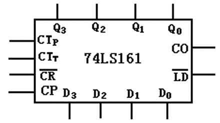
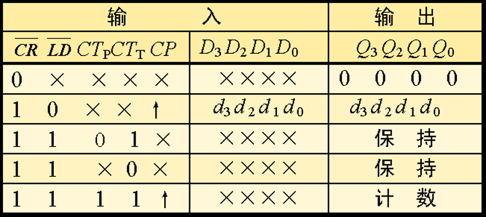
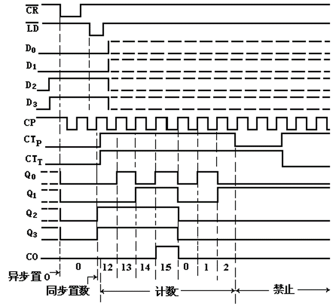
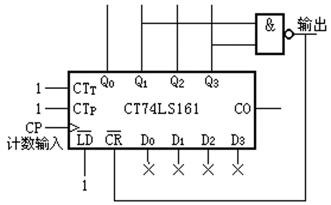
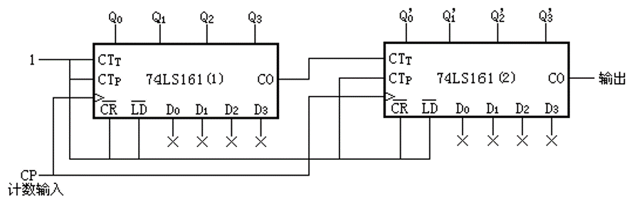
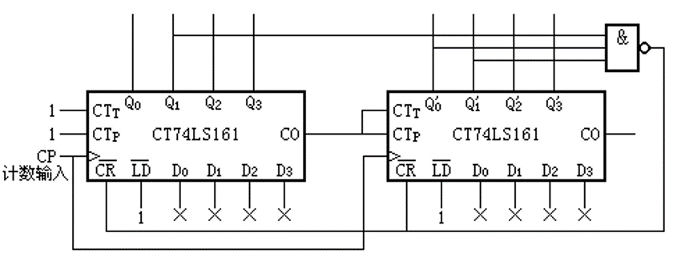

计数器与计时器
实验背景
74LS161
74LS161 芯片具有同步四位二进制计数器功能，其引脚如下：

CP：接入时钟信号，上升沿触发CRn：清零端，低电平有效，且为异步清零LDn：置数控制端，低电平有效D3~D0：置数数据端，当LDn有效时将数据写入CTT, CTP：使能端，两脚均为高电平时启用计数功能，任意一脚为低电平时计数器保持原状态Q3~Q0：数据输出端CO：进位输出端，当输出位均为 1 时置 1
请特别关注输出改变时机：异步清零意味着不论时钟信号为何当清零端有效时立即改变输出为 0；清零外的所有输出改变都发生在时钟上升沿（包括置数与计数）。
其功能表如下：

时序图
提供时序图帮助理解：

x进制计数器
74LS161 提供了十六进制计数器的功能，我们可以通过反馈清零和反馈置位等方法得到任意进制的计数器，本实验中只使用反馈清零的设计方法。
所谓“反馈清零”指的是用输出 Q3~Q0 的值决定何时清零，即清零端 CRn 是关于 Q3~Q0 的函数。以十进制计数器的设计为例，我们期望输出值为 0~9 十个状态，也就需要在将输出 10 时进行清零。十进制数 10 的二进制表示是 b1010，我们得到清零端为 \(\overline{CR} = \overline{Q_3\overline{Q_2}Q_1\overline{Q_0}}\)，注意到输出从 0 开始自增，到 b1010 时是第一次 Q3, Q1 同时为 1 的状态(b0000->b0001->...->b1010)，因此我们可以简化清零端为 \(\overline{CR} = \overline{Q_3Q_1}\)，得到了如下电路，其功能为十进制计数器：

在这里可能有一个疑问“为什么不在输出值为 9 时(b1001)进行清零”，之前提到芯片的复位是异步的，与时钟信号无关，在输出变为 10 的时钟上升沿后很短的时间内，复位信号变为有效，进而将输出清零，我们并不去考虑这段很短的时间可能造成的影响。而如果在输出值为 9 时进行清零，则实际得到的是“九进制”计数器。
如果希望拓展计数器的位宽，则需要多个计数器相连，以256 进制计数器为例，使用两片 74LS161，高 4 位的一个使能端接低 4 位计数器的进位端，在低 4 位输出为 b1111 时进位信号升起，使高位片在下个时钟上升沿时自增。

结合刚刚介绍的两个计数器的设计特点，我们可以设计出任意进制的计数器（在不考虑具体时延影响的前提下），比如一个五十进制计数器，其输出状态应为 0~49，在输出应为 50 时(b0011_0010)进行清零。容易得到其清零端应为高位片的 Q1, Q0 与低位片的 Q1 的与非，即 \(\overline{CR} = \overline{Q_1'Q_0'Q_1}\)，同时需要将低位片的进位信号连接到高位片的使能端。

实现 74LS161 功能
提供代码框架如下，请实现 74LS161 芯片功能，接口定义等内容见实验背景。实现后对 My74LS161 进行仿真。
74LS161 应用
请注意
请从“233 进制计数器”和“时钟应用”中选择一个来完成，如果选择“233 进制计数器”则本实验获得分数不超过 70。
关于实现
清零端和置数端应书写为 CRn = ~(Q == 4'b1010) 或 CRn = ~(Q[3] & ~Q[2] & Q[1] & ~Q[0])。请不要写成实验背景中的 CRn = ~(Q[3] & Q[1])。
233 进制计数器
请仿照五十进制计数器，使用 My74LS161 模块实现一个“233进制”计数器，其状态输出为 0-232。实现后进行仿真验证。其中 rstn 为异步复位，低位有效。
时钟应用
要求实现一个格式为“小时：分钟”的时钟应用，使用 Arduino 板上的七段数码管进行输出。使用 SW[0] 选择时钟速度，使用 SW[1] 对时钟进行“重置”（重置为 23:00）。
top 模块框架如下，请补充代码，获得正确的 hour_tens, hour_ones, min_tens, min_ones，要求必须使用 My74LS161 模块。
需要注意：
- 分钟部分状态为
0~59 - 小时部分状态为
0~23 - 为每个
My74LS161实例的LDn, D3~D0接线，使得SW[1] == 1时将时间设置为23:00
一个可行的设计思路是，使用四个 My74LS161 实例分别存储 hour_tens, hour_ones, min_tens, min_ones 的值，你需要设计合适的清零与进位时机，如分钟(min_tens, min_ones)达到 59 后对时钟进位并清零。
请自行书写约束文件，并进行下板验证。
实验报告要求
实现 74LS161 功能
- 模块
My74LS161代码 - 仿真代码，仿真波形与解释
74LS161 应用
- 若选择了“233 进制计数器”
- 模块
counter_233代码与解释 - 仿真代码，仿真波形与解释
- 模块
- 若选择了“时钟应用”
- 模块
top代码与解释 - 下板图片，能够证明功能完整即可
- 模块